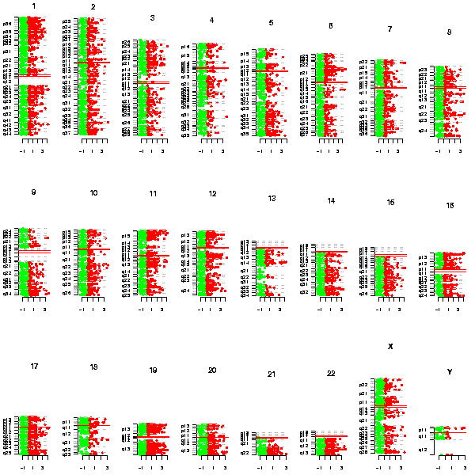

Visualisation / Idiogram
Description
Plots an idiogram for the genes in the selected list.
Parameters
- Which chip to plot (1...1000) [1]
- Image width (200...3200) [600]
- Image height (200...3200) [600]
Details
Genes are colored according to their expression. Over-expressed genes are colored red, and under-expressed green.
Output
An image with the genes positions in the chromosomes, and colored according to their expression:
